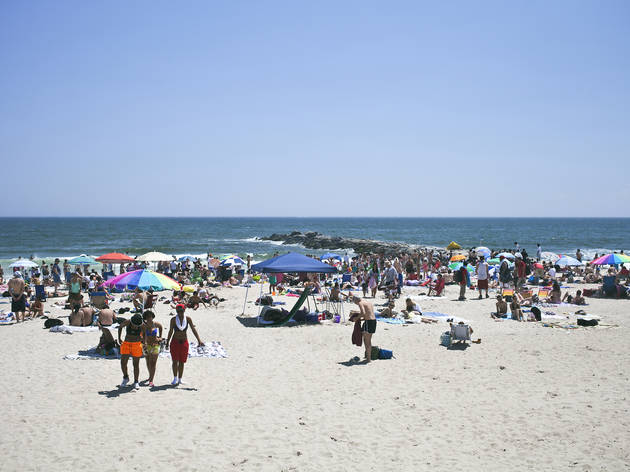

I joined the Girls Who Code Summer Immersion Program to learn more about computer science field and to gain coding skills. I had no experience or knowledge in coding and I wanted to increase my knowledge while also finding new interests and passions. I not only learn computer science skills, but also create a sisterhood and enviornment for intellectually curious young adults. I would reccommend this program to any young girl who aspires to have a career in the STEM field and wants to gain early experience in the technolgy and computer science field. girlswhocode
Some of the core principles that Girls Who Code stresses in young female high school students include:
Brave and Resiliant
Emotionally Intelligent
Socially Just
Intellectually Curious
Beach Bum Beauties
My mom and I went to Far Rockaway Beach in Queens for the first time. The beach was very clean and it was very nice. I got a tan and went in the waves. My mom and I also collected shells and rocks on the sand. We got milkshakes aftwerwards. Although I did get sunburn, I had a really good time and would go to the beach again especially with my friends.

Road Trips and Sunsets
I took a road trip to visit the Boston Univeristy Campus with my mother to learn more about BU's values and student life on campus.
I really enjoyed the road trip and it was very cool to see how different the enviornment and culture is between NYC and Boston! Besides seeing the university's campus, the road trip gave me the opportunity to bond with my mom and be outside my home area for a bit to explore different enviornments in preperation for leaving the home for college.
If you would like to schedule a college visit at Boston University, check out this website.